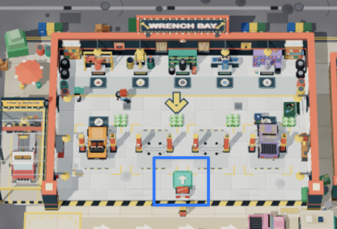
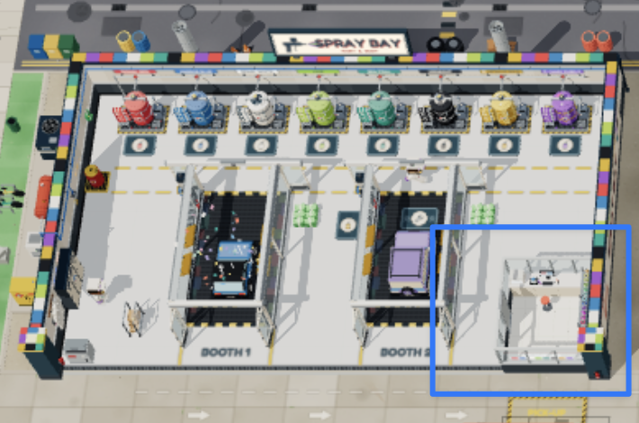
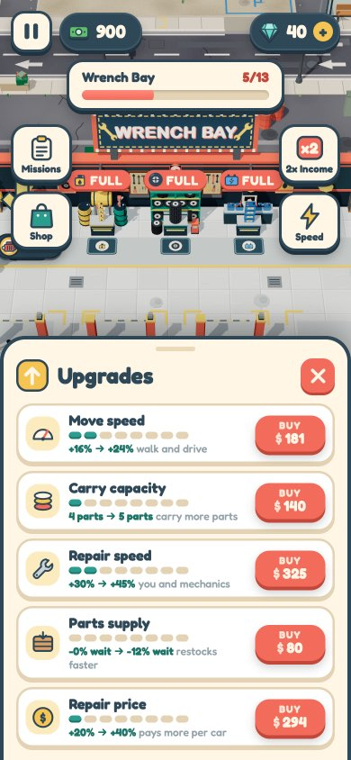
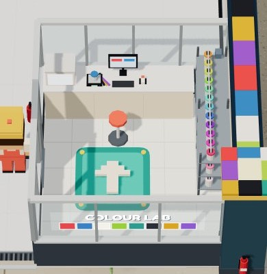

Everything you can buy, in one place
Today the garage has 24 unlock pads (13 in Wrench Bay, 11 in the Spray Bay), each one on the floor next to what it buys, and a teal pad that only sells the five boosts. The proposal: one upgrade board per workshop. Wrench Bay keeps its teal pad in the middle of the floor. The Spray Bay gets one inside the glass office in the bottom-right corner. Stand on it and you get every unlock and every boost for that workshop on one sheet. The floor pads go away.
Built with your review: keys are held to buy (a quick tap only wiggles the key), the pad's tag shows the word "Upgrades" only when you're close (far away: the arrow and the count), a purchase has its own moment (stamp, confetti from the key, the camera glides to the new thing; a boost flashes its row and pops "Lv 3!"), and the pictures on the cards stay still. The mock below follows the same rules.
1Today



- Shopping is a walk. Only the next two unlocks have a pad. They are often at opposite ends (the engine shelf at the back wall, the valet stand on the forecourt), so spending your cash means walking laps.
- Nothing shows what's next. You see two pads and nothing about the 11 after them. There's no "how far through the garage am I".
- Two ways to pay. Unlocks drain cash while you stand on them, boosts are a tap. On the board, both are a tap.
2The board (live: tap the tabs and the plan icons, hold a key to buy)
Real items, prices, sentences and icons from the game's config. Wrench Bay with 5 of 13 built and $700; the Spray Bay with 3 of 11 built and $7.5K. The camera rises a little while the board is open, so your character stays in view above it.
- Header: the workshop and your cash. Prices sit right next to what you have, so you don't have to look up at the HUD.
- Two tabs. Build is this workshop's unlocks, Boosts the five levelled upgrades. The coral number is how many you can buy right now. The board opens on the tab that has one.
- The plan. Every unlock of the workshop on one line, in buying order: teal ones are built, the two outlined ones are for sale, grey ones come later. Tap one to see its name and price. It shows how far you are and what's coming.
- Two cards for sale. Same rule as today: the next two in line. Each card has the picture, the name and ribbon, the sentence and the "before → after" chips that the floor pads show today. A card you can afford turns yellow and its picture hops.
- The BUY key. Coral when you can pay; hold it until it fills. When you can't, it's grey, fills with yellow as your cash gets closer, and says how much is missing ("$200 to go").
- After you buy. The card gets a Built! stamp, the sheet dips, and the camera glides to the spot while the new thing pops in with the usual poof and toast. Then the camera comes back, the sheet rises, and the next unlock in line slides into the empty slot. Tapping skips it.
3Boosts, and finding the board

4What changes, what stays
Stays
- The unlock order and prices, and "the next two are for sale".
- What an unlock does when bought (the shelf, lift, booth or hire appears in its place, with the poof and the toast).
- The teal pad in Wrench Bay, its spot and its short wait before the sheet opens. Stepping off still closes it.
- The words on the cards: the same table that writes today's pad dock (unlock-info.js).
- Town building pads, Pro Gear and the Academy: untouched.
Changes
- No unlock pads on the floor in Wrench Bay or the Spray Bay. Unlocks are a tap, not a cash drain.
- One board sheet replaces the boosts sheet. The Spray Bay gets the same board in its office.
- The office stops being a solid block and gets a sliding door.
- The camera rises a little while the board is open, then glides to each new unlock.
- The board pad gets a ground tag with an "affordable" count. The tutorial arrow points at it.
Your call
- Camera glide after BUY: it's the "look what you built" moment, but you can't move for about 1.5 s. The alternative is a short-lived arrow at the screen edge pointing to the new thing.
- Two for sale, or the whole plan? I kept "the next two" so the balance stays the same. Opening the whole plan would give more choice, but players could skip the cheap early steps.
- Platinum Club: its unlocks are floor pads too. The club isn't built yet, so it can get a board when it is.